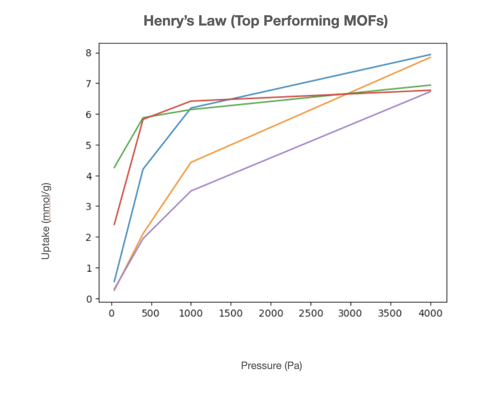
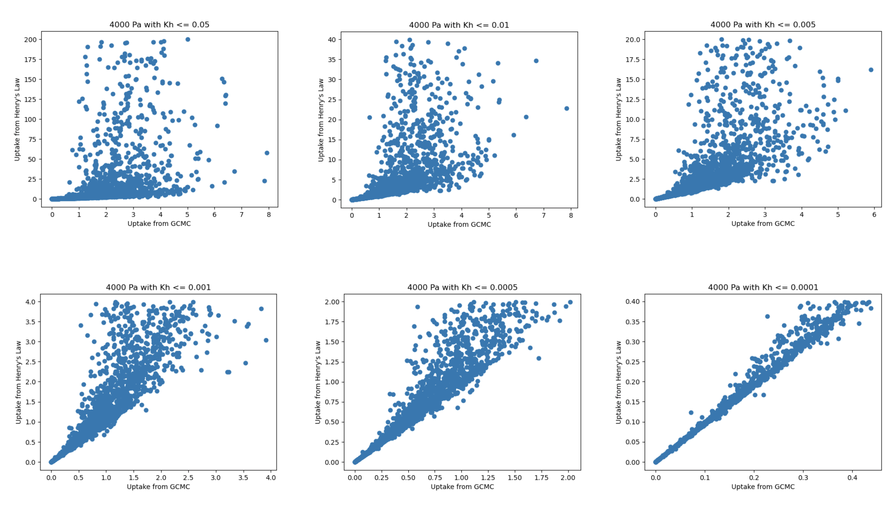
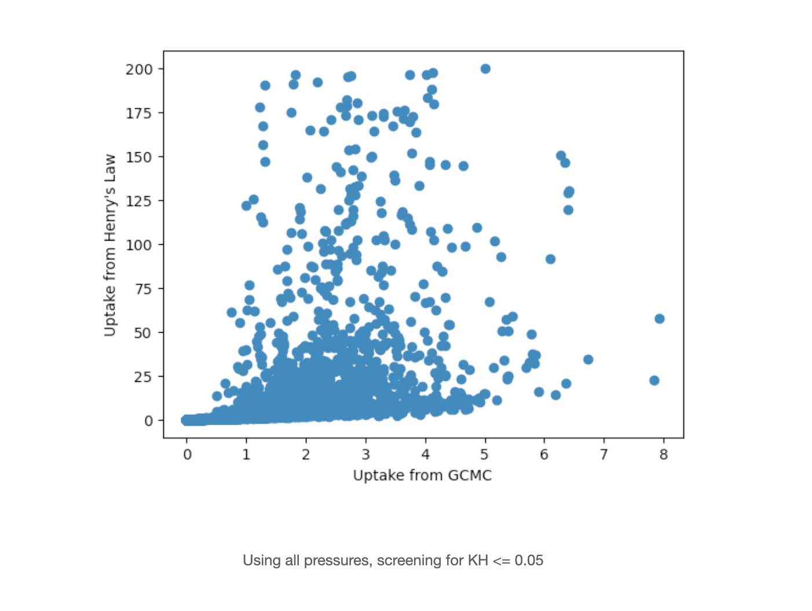
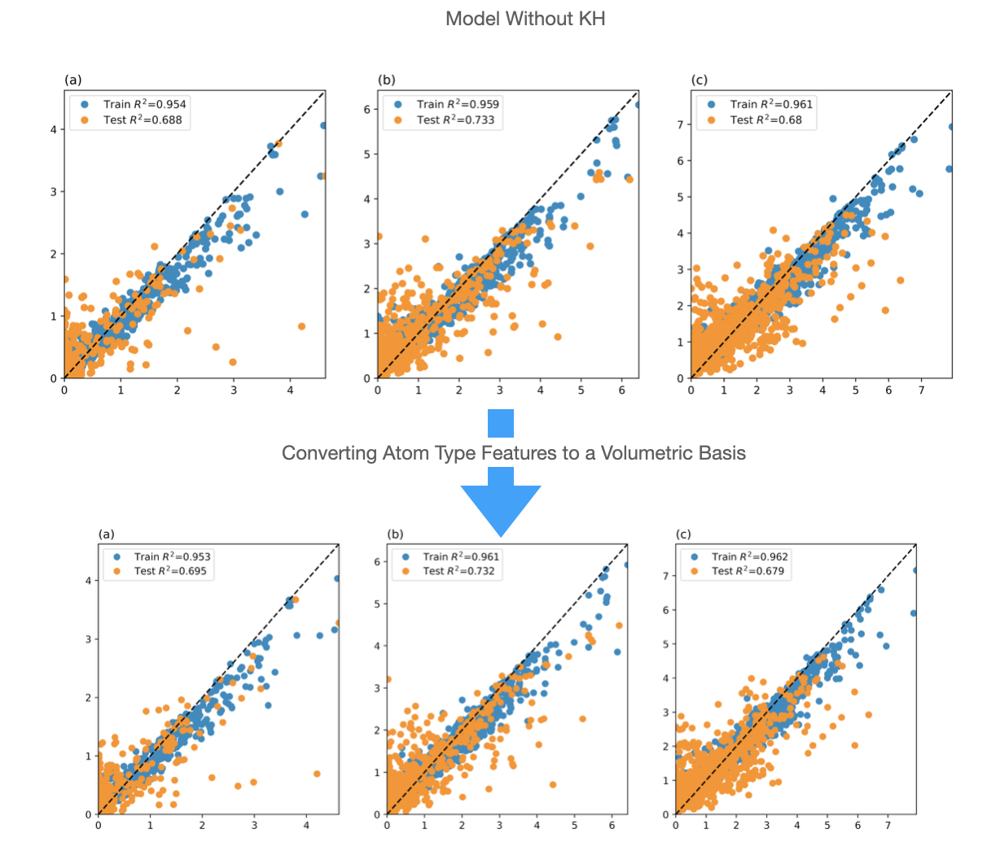
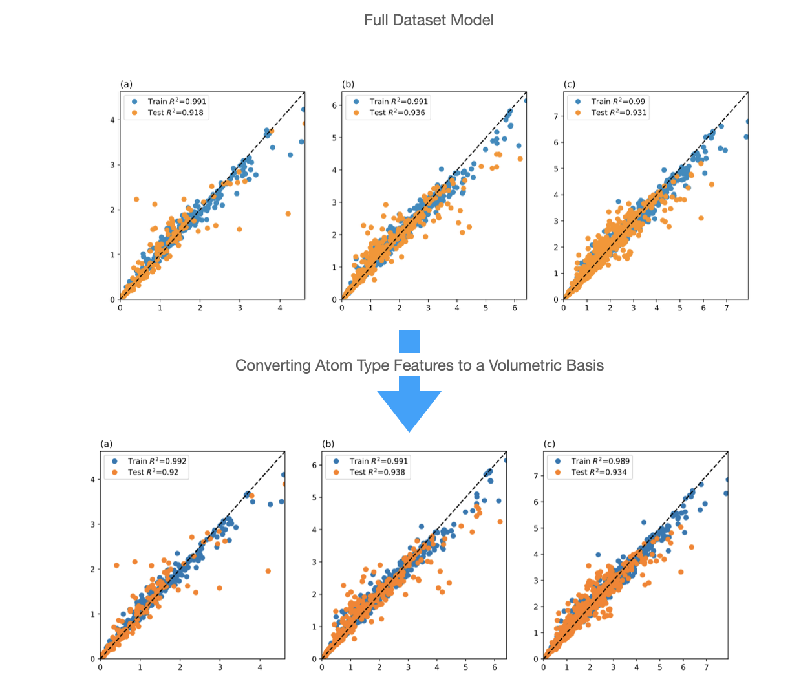
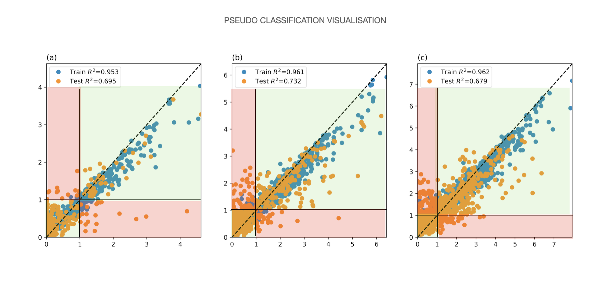

Answer
It was not only the Anion Pillared MOFs that were selected. Clarification in the manuscript will be added to indicate it was the Anion Pillared MOFs that were used to evalute the time necessary for gathering descriptors while a subset of the CORE MOFs (the ones where the partial charges had been calculated) were used in the model as well to capture the diversity of MOF structures. The model was then also tested on QMOFs; however, I am not sure if this should be in the manuscript.
Answer
We need to decide whether this descriptor will be kept in the manjuscript. The boundary surfaces along the primary axes are considered and the MOFs origin is shifted such that the highest density of atoms are near the origin. While this in part removes some of the arbitrariness of where the boundaries are set, a different coordinate system could have been used that yields different results. Instead of this being a kinematic property (this is due to poor phrasing in the original script), the descriptors should be thought of as the proportion on the boundary surfaces (of the MOF with the shifted origin), of where a CO2 molecule can be placed unimpeded by the VDW forces. So while this does take into account interactions with the framework, it does so only along the crystal boundaries using approximate VDW interactions. While this is comparable in some ways to the void fraction, looking purely along the surface atoms allows for a Markov Matrix to be used via the simplified approach. While other methods of creating a Markov Matrix are possible, the performance of looking at the "inseration probability" along each surface was tested with this descriptor.
The IRMOF structure was shown in the Figure. (I will have to see which specific sides were evaluated)
Answer
Henry's law appears to be effective in MOFs with low KH at the lowest pressures. The MOFs that we are most interested in often have high KH values that do not deviate significantly from the values predicted through Henry's law. These were shown in meeting slides from previous weeks. A few of the figures are shown below



Answer.
A. The use of a ploynomial equation obviates the necessity of using ML libraries whil gathering the descriptor while simultaneously ensuring the reproducability of the descriptor. If a ML model such as RF were used instead, there would be minor deviations betweeen the value of descriptors each time they are gathered. There is no concern regarding over-fitting for the polynomial as the function is desired to match the simulated data as closely as possible. In future works, the zeroing issue will be adressed by removing the "p" parameter of the function.
B. The dataset to which the polynomial function was fit, did require numerous simulations. These simulations were both computationally cheap and expedient to run. Evaluating the partial charges in frameworks will not require additional simulations; therefore the sentence should instead be phrased as "not requiring additional simulations" for gathering.
C. Periodic boundary conditions did apply (I am fairly certain RASPA uses periodic conditions). The length of the unitcell was set such that the dimension in any direction exceeded the interaction length of 13A. The exact sizing is arbitrary, but 20A was selected. A dataset that evaluates the electrostatic interactions of a different gas molecule with a point charge could easily select a different size unit cell (e.g. 100A, or 50A, 1000A in each dimension) so long as each point charge is placed within the identically sized unitcell.
D. The partial charge or each atom in the MOF structure is considered first in isolation and evaluated through the polynomial function determined above. This way, the amount of CO2 that charge would attract in a vacuum (and at the specific unitcell dimension) can be determined. The entire structure is then evaluated by summing these values. As the likelihood of large values from this summation increases with larger frameworks, the per-atom average is then taken. By including both of the sum and average as descriptors, the intuition would be to carry both information aboout the average effect of the partial charges within the framework, and by including the sum, to carry information regarding the size and "polarity" (dipole moment) of the structure by evaluating teh discrepancy between these values.
E. Clarified via text in manuscript.
Answer. How the figures should be displayed and what information will be conveyed still needs to be determined! The numbers in the table have slightly changed with the conversion of group A descriptors to the volumetric basis. Based on the new descriptors, the values can be converted to bar charts, or other figures. The difficulty is to capture the necessary information. The full table can be moved to the SI.
Answer
Since this has been brough up by both reviewers, it makes sense to add a new section specifically for evaluating Henry's Law as a baseline of performance. While it does not perform well for the MOFs with high uptake, it has a good correlation with the uptake of MOFs that dont capture much CO2. Similar to the drawback of the model that utilises KH as a feature, this would also have the drawback of requiring considerable computational power to gather in the first place.
Answer We need to decide whether this descriptor will be kept in the manjuscript.
The "interior" and "exterior" are based on the unitcell boundaries of the MOF with offet coordinates as described in the response to Reviewer 1. While this is not a direct match with the reality of the situation, it is a necessary definition to derive the Markov Matrix. This descriptor will be elaborated on by avoiding the terms "interior" and "exterior" if kept in the text.
Answer
This is a good concern to mention as it was something that has been on the back of my mind as well since the O2/N2 paper. While the article that motivated this descriptor did not appear to convert to a volumetric or gravimetric basis, the way the RF algorithm works would divide the "space" depending on the ratio of atoms to onw another anyway. To ensure additional information regarding the size is captire (such that doubling the unitcell does not affect the values directly) the descriptor was converted to a volumetric basis. The results prior to this change and following this change are shown in the figures below.


Answer
The proposed changes will be made to the table. As mentioned in the response to reviewer 1, the table will be moved to SI while the contents will be summarised through figures.
Answer
While the error values are high, the regions that they fall into for pseudo-classification are quite accurate when using a 1mmol/g threshold. Similarly, when classification models are used directly, the model's performance is comparable to the model with KH and even outperforms it in some instances. (Refer to PDF)

Answer
The results are ready for the dataset without the revisions. The updates must be reflected and added to the manuscript
In addition to re-gathering the results. It seems like this could be a completely separate section?